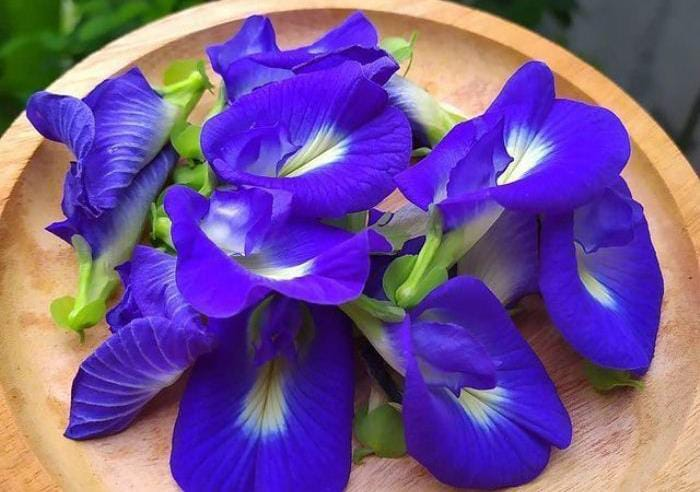
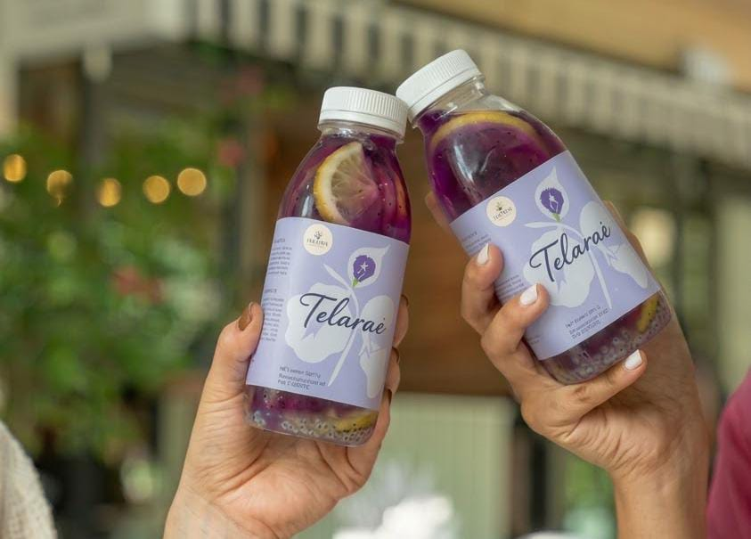
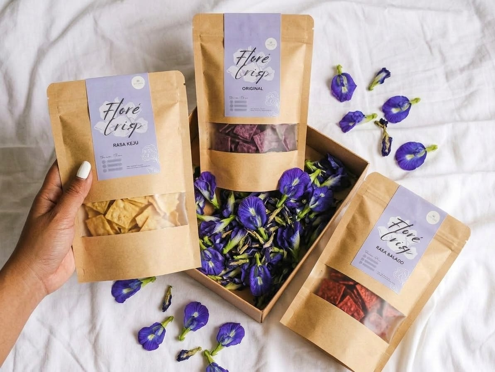

Manfaat Bunga Telang

- Kaya Antioksidan: Mengandung senyawa antosianin alami yang berkhasiat menangkal radikal bebas serta meningkatkan daya tahan tubuh secara optimal.
- Kesehatan Otak: Membantu memperkuat daya ingat, merangsang fungsi kognitif, dan menjaga konsentrasi saat beraktivitas harian.
- Relaksasi:Memberikan sensasi menenangkan pada pikiran untuk meredakan stres, kecemasan, serta mendukung kualitas tidur.
- Kulit & Rambut: Merangsang produksi kolagen alami untuk menjaga elastisitas kulit dan memperkuat akar rambut.
Telarae

Minuman kesegaran alami yang terbuat dari ekstrak bunga telang pilihan, dipadukan secara sempurna dengan sensasi asam segar perasan lemon serta kebaikan biji selasih yang kaya nutrisi.
- Kesegaran Alami: Perpaduan asam manis dan dingin yang pas, sangat cocok dinikmati untuk mengembalikan stamina dan kesegaran tubuh harian.
- Kaya Vitamin C & Antioksidan: Perasan lemon alami membantu memenuhi kebutuhan harian Vitamin C untuk meningkatkan sistem imunitas tubuh.
- Pencernaan Sehat: Tambahan biji selasih melancarkan sistem pencernaan sekaligus memberikan sensasi tekstur yang unik di setiap tegukan.
Flore Crisps

flore Crisps merupakan inovasi camilan keripik sehat nan renyah yang diolah secara higienis menggunakan bahan-bahan berkualitas tinggi serta dipadukan dengan kebaikan ekstrak Bunga Telang alami. Dibuat tanpa menambahkan bahan pengawet sintetis maupun pewarna buatan, keripik ini tidak hanya menyajikan perpaduan rasa gurih dan renyah yang menggugah selera, tetapi juga kaya akan kandungan gizi serta antioksidan alami yang siap menjadi teman setia saat bersantai atau beraktivitas harian Anda.Keripik renyah bertabur ekstrak Bunga Telang alami dengan 3 varian rasa favorit:
Abadikan momenmu dengan BLUERA
Pilih template bingkai photostrip kamu terlebih dahulu: